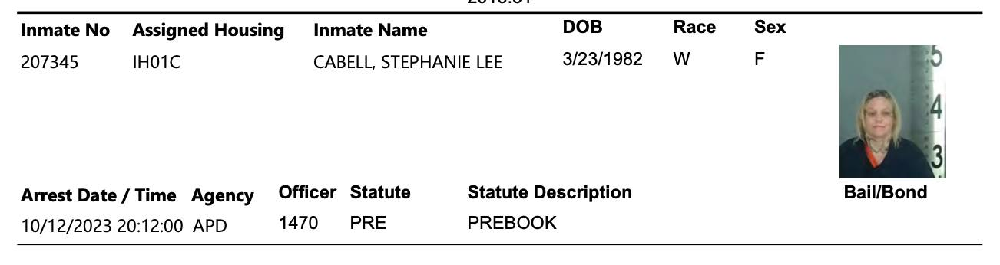

Timeline photos
This is our friend Harley Quinn who I have been introducing you to in some interviews we did together. They are on my Youtube channel.
Apparently the police came for her and another person in pretty significant force a day or 2 ago.
I am learning so much with this Israeli / Palestinian nightmare boiling up right now. It's all just such a mess. A tragic mess.
It reminds me of Harley Quinn and her great war between her internal reality and her external reality. She has been diagnosed with Schizoaffective disorder. She had a wonderful home at Stoney Pointe, which she left. Before then she was in New Day Court that forced her to try medication for her mental wellness. She hated it.
She can't find a way to live in a world that is at peace with the inside and the outside.
I saw her on Tuesday. She was living on an old, rotten couch. No blankets. No tarp. Nothing to protect her from the elements.
But I assure you she is begging for that couch right now in jail. She will fiercely hate her freedom being taken from her.
What a mess. A tragic mess.
And Harley Quinn reminds me of all of us. We all are on this path of uncertainty and insecurity. We all live lives of quiet desperation, says Henry David Thoreau. So many of us are barely holding it together. Barely making financial ends meet. Barely holding our families together. Barely keeping our self-medicating addictions at bay enough to somehow show up at work to pay one more month of rent and utilities. Trying to make peace between our internal reality with our external reality. A violent war of two worlds.
Hamas just couldn't take it any more seeing their people living in an open air prison. And now they are lashing out in the most insane ways. And Israel is exhausted from constantly living an existence where entire nations want them exterminated from the planet. Their internal reality is completely at odds with their external reality.
NO ONE UNDERSTANDS WHAT ANY OF US ARE GOING THROUGH.
What a mess. A tragic mess.
This is the truth of life. Of all life.
The Palestinian / Israeli nightmare is a metaphor for our own life. Harley Quinn is a metaphor for our own life. We all suffer so deeply and often so alone. No one seems to understand. No one seems to care.
All I feel now is that if you somehow have been given the great gift of kindness, empathy and compassion, we desperately need you in the world. We've always needed you. But it's all so clear to me now.
Hell on Earth is real. And we need Angels Of Love and Compassion to attend to all the mortally wounded souls strewn all around us.
I believe that even the welling up of love and understanding and compassion within our being matters. The feeling of love is a real thing that spreads. If you can feel love and compassion and connection, let yourself feel it. I truly believe it matters.
And if you are more in need of love right now, try to open your heart to feel the love that is flowing in the world. It exists. You are loved. You are cared for. We love you.
I love you all so deeply.